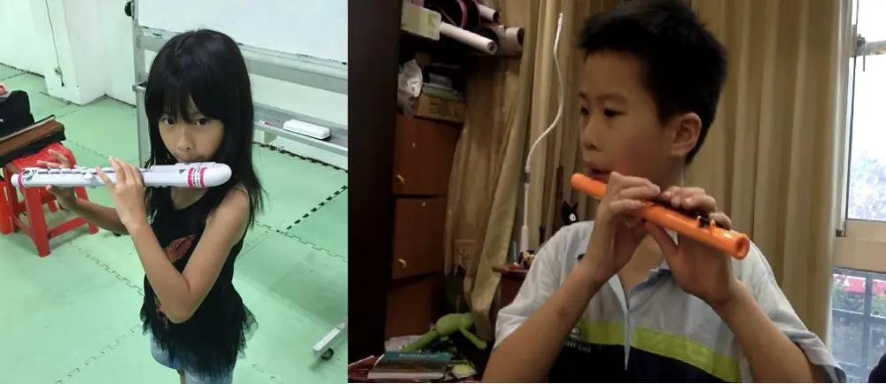
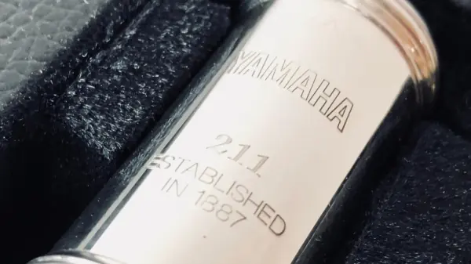
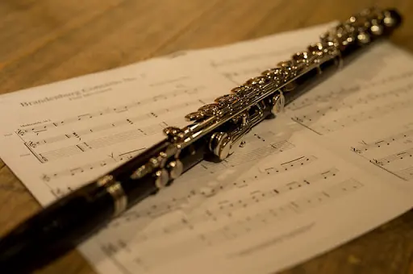
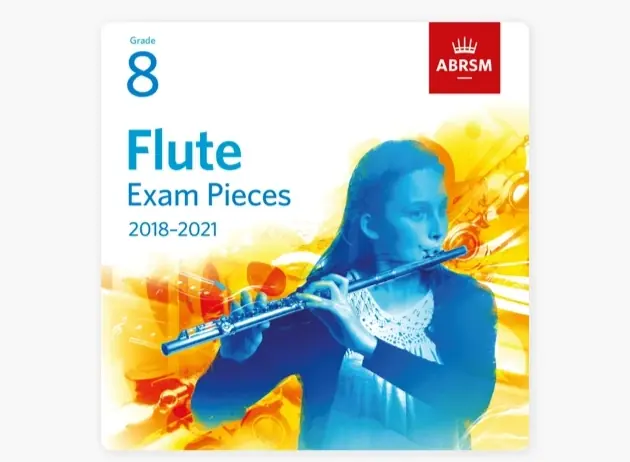
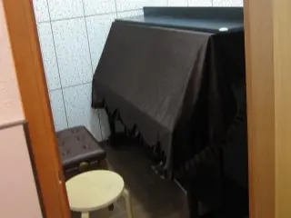

這是舊站 oliverflute.com 的文章，內容保留原貌，只修正排版。其中的考試日期、價錢和課程安排屬寫作當時的資料，請以現行公布為準。
長笛初學Q&A
在十五年的教學生涯裏，由幼稚園高班的小朋友，到70歲退休的老人家也教過，今天就抽出幾個初學者常見的問題，為大家一一解答：

Q : 幾歲才可以開始學長笛？
A : 長笛與小提琴和鋼琴不同，因為樂器的長度影響，如果小孩的手臂不夠長，演奏時身體會十分吃力，我建議同學們9歲後才開始學習長笛，如果手不夠長又想學吹笛的話，張老師會建議同學先由短笛或U型笛頭入門（中國笛子和葫蘆絲都是好選擇），吹奏起來輕鬆簡單又愉快！
Q : 學長笛是否需要很大的肺活量？
A : 有很強的肺活量當然好啦，但掌握用氣的方法才是重點，畢竟你吸再多的氣，吹不準和控制不了也是沒意義呀。 不用怕，老師會教識你正確用氣的方法，到你老了80歲還是吹得那麼輕鬆！( 廷申閱讀 : 掌握呼吸的方法 )

Q : 初學應買什麼價錢的長笛？
A : 這要視乎個人預算，作為一枝入門長笛，我認為 YAMAHA 211 / 221 系列性價比最高，三千多就可以用很久了，這型號八級前大部份歌曲都應付得了，如你打算買二手長笛的話，最好給有經驗的朋友或老師，幫你檢查是否有漏氣，因為再貴的長笛，皮墊漏氣了也是吹不動的！( 廷申閱讀 : 如何挑選一支長笛 )

Q : 大人學長笛是否很困難？
A : 學一門樂器與年紀無關，大人的理解力絕對比小朋友要高，若真的有興趣，年紀不是問題，只要定下時間來練習，考個八級絕對不是什麼難事。

Q : 如果我以長笛８級為目標，需要多久才能達到？
A : 八級要多久才能考到，這很視乎個人的因素，我認為天資是其次，練習和方法才是重要，畢竟不是每人都是莫札特，只有掌握正確的吹奏方法，和投入足夠的時間練習才是成功的關鍵。
老師有很多學生都是由零基礎開始學習長笛，很多學生最後都能達到八級程度，最快的一位三年就考到了，而有些同學工作繁忙，但每星期都能定下練習的時間，４～５年也達到八級的程度，其實學到八級，才真正具備演奏的基礎，八級一點都不難！

Q : 琴行和私人教授有什麼分別？
A : 琴行的與私人最大分別通常是學費的分別，琴行學是以級數計算，也有一定的請假制度，也會遇上更換老師的煩惱。而私人教授的老師，學費不會那麼複雜，大部份老師直接以時間計算，上堂的時間也比琴行更靈活。
Q : 私人教授的老師比琴行的老師要好嗎？
A : 這絕對不是，在哪裡都會遇上熱心教學的好老師，我也曾於音樂中心教授，之後才轉為私人教授。
琴行能幫老師招收學生，因此很多新入行的老師，都會選擇於琴行工作，可惜有部份琴行為求吸引學生，不僅學費低，更設有一堆折扣，有質素的老師當然不願意教，最後甚至只能請一些未達標的老師，因此才被人感覺琴行不如私人老師。
題外話（老師與學生是一種緣份，當你遇上一位好老師，請你好好珍惜，別隨便請假喔！）
好了，今天就先解答到這裏，歡迎大家聯絡我提出更多問題，可以透過網站留言或直接WHATAPPS張老師 ～